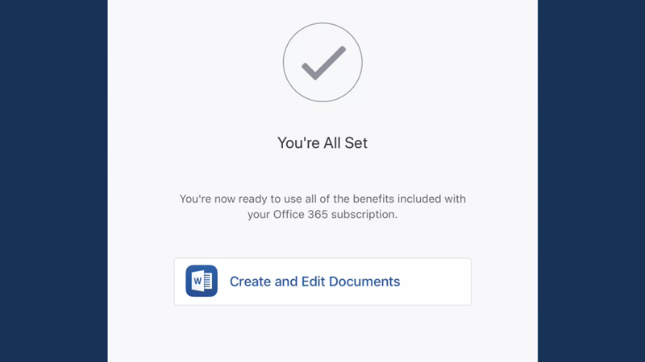
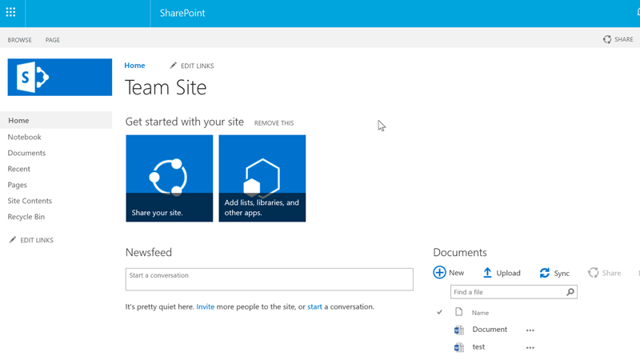
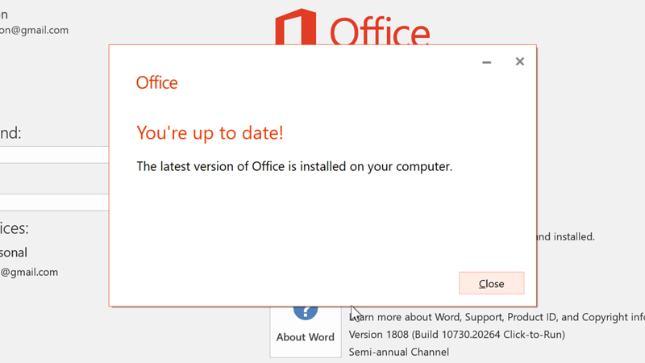

/en/excel/whatif-analysis/content/
Office 365 làphiên bản dựa trên đăng kýcủa Microsoft Office Suite và bạn có một số tùy chọn khi mua tài khoản. Một làOffice 365 Personal, cung cấp cho một người dùng quyền truy cập đầy đủ vào mọi ứng dụng Office. Một cái khác làOffice 365 Home, được thiết kế cho các gia đình có nhiều người sẽ sử dụng Office.
Xem video bên dưới để biết thêm về những gì Office 365 cung cấp.
Có rất nhiều điểm tương đồng giữa các chương trình Office 365 và Microsoft Office Suite truyền thống, vì vậy trải nghiệm tổng thể sẽ có cảm giác quen thuộc nếu bạn đã sử dụng Office trước đây.
Tuy nhiên, Office 365 cung cấp một số lợi ích mà Microsoft Office Suite không có. Ví dụ: đăng ký Office 365 cấp cho bạn quyền truy cập vàonhiều tính năng hơn, bao gồm Trình dịch, Trợ lý Sơ yếu lý lịch và Tra cứu Thông minh. Bạn cũng có thể cộng tác với những người khác trong Excel thông qua tính năng đồng tác giả, tính năng này cho phép người khác chỉnh sửa sổ làm việc của bạn trong thời gian thực.
Ứng dụng Office dành cho thiết bị di độngcũng có nhiều tính năng hơn khi bạn đăng ký. Ví dụ: bạn có thể thực hiện những việc như chèn dấu ngắt trang, sử dụng nhiều màu hơn hoặc tạo PivotTable bằng ứng dụng Excel dành cho thiết bị di động. Tuy nhiên, phiên bản miễn phí của ứng dụng dành cho thiết bị di động chỉ cho phép bạn thực hiện các tác vụ cơ bản, như tạo tệp và nhập văn bản.

Office 365 cũng bao gồm các lợi ích khác, chẳng hạn như có thêm dung lượng lưu trữ tệp trong OneDrive và hỗ trợ kỹ thuật.
Một lợi thế khác biệt khi sử dụng Office 365, đặc biệt dành cho doanh nghiệp, là quyền truy cập vàoSharePoint Online. Đây là dịch vụ có trong một số phiên bản Office 365, cho phép bạn chia sẻ và cộng tác với người khác, cho dù họ là đồng nghiệp hay khách hàng. Vì tài liệu nằm trên đám mây nên quyền bảo mật có thể được thiết lập để cho phép bất kỳ ai trong tổ chức, bất kể vị trí của họ, đều có thể xem tài liệu.

Người đăng ký Office 365 cũng nhận đượccập nhật phần mềm thường xuyên hơnso với những người đã mua Office mà không đăng ký. Điều này có nghĩa là người đăng ký Office 365 có quyền truy cập vào các tính năng, bản cập nhật bảo mật và bản sửa lỗi mới nhất.

/en/excel/new-features-in-office-2019/content/